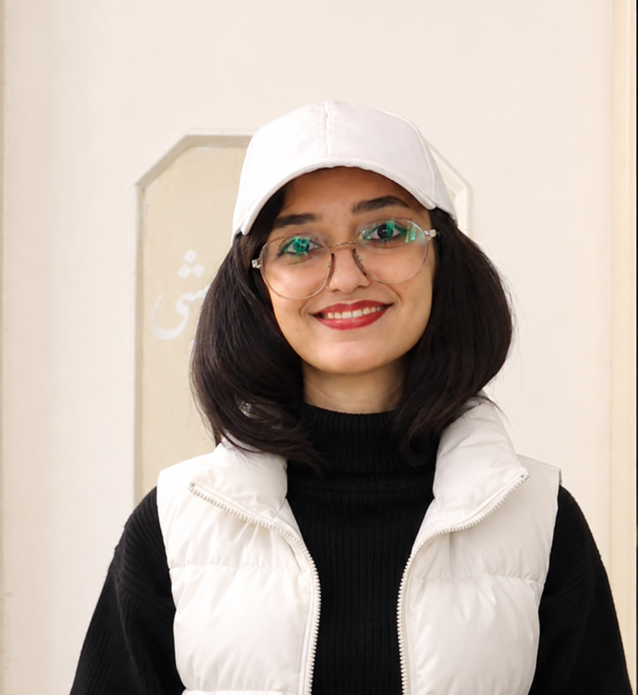

01
Neuroscience
Understanding the brain, neural systems, and their underlying biological mechanisms.
I am an M.Sc. student in Computer Science with a strong curiosity about science and a passion for continuous learning. I am highly motivated to expand my knowledge through academic study and research, particularly at the intersection of neuroscience, computational biology, machine learning, deep learning, and genomic data analysis.

I am an M.Sc. student in Computer Science at Shahrekord University, with a B.Sc. background in Biology from Alzahra University, Tehran.
My academic interests focus on applying computational methods to biological and biomedical questions, particularly machine learning, transcriptomic data analysis, neuroscience, and genomic research.
I enjoy working across disciplines and developing reproducible computational projects that connect data analysis with biological interpretation.
Understanding the brain, neural systems, and their underlying biological mechanisms.
Investigating the molecular and genetic mechanisms of brain-related diseases.
Using computational approaches to explore complex biological and biomedical questions.
Developing intelligent models for biological data analysis and biomedical applications.
Exploring computational approaches to understanding diseases and discovering potential therapeutic strategies.
Investigating genomic alterations, gene expression, and molecular biomarkers associated with diseases.
Shahrekord University, Iran
GPA: 18.08 / 20
Ranked 1st in the class
Alzahra University, Tehran, Iran
Machine-learning-based exploration of peripheral blood transcriptomic data for biomarker discovery in autism spectrum disorder.
A computational project focused on processing and exploring single-cell RNA sequencing data.
ICBME 2026, Iran.
Accepted · To be published in IEEE XploreI welcome conversations about research, interdisciplinary projects, academic opportunities, and potential collaborations.
Find me on GitHub ↗